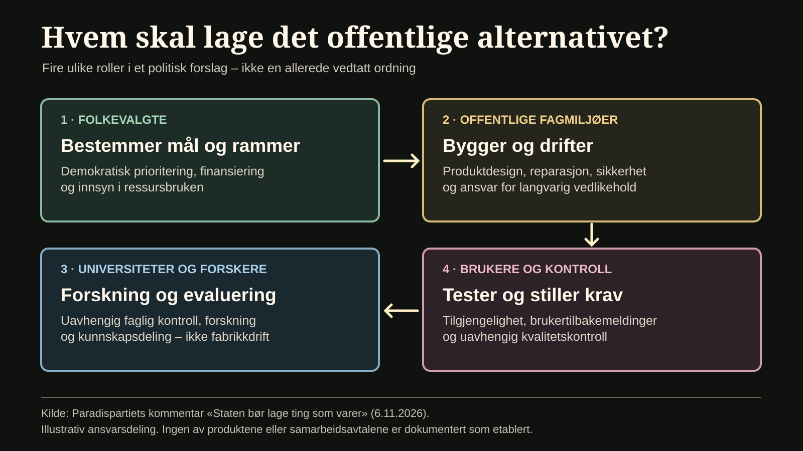

Staten skal lage ting som varer
Paradispartiet vil at staten skal koordinere egne alternativer til grunnleggende produkter og tjenester: fra en solid TV, mobiltelefon og hammer til tekstbehandling, regneark og kunstig intelligens. Universitetene kan bidra med forskning og utvikling.

Vi trenger ikke hundre varianter av alt. Vi trenger produkter som fungerer, varer lenge, kan repareres og ikke koster mer enn nødvendig. Paradispartiet mener det offentlige bør ta større ansvar for å utvikle og tilby slike produkter – ikke bare kjøpe dem fra private leverandører.
Tenk deg en offentlig produsert TV. Et godt bilde, god lyd og et raskt, oversiktlig grensesnitt. Ingen reklame i menyene, ingen unødvendig datainnsamling og ingen funksjoner som forsvinner fordi produsenten slutter å støtte modellen.
En TV som kan repareres, som får programvareoppdateringer over lang tid, og som ikke er designet for rask utskifting. Den samme ideen kan gjelde en mobiltelefon: solid konstruksjon, rask ytelse, godt kamera, lang batteritid og et operativsystem som respekterer brukeren.
Det offentlige alternativet skal ikke være en dårligere kopi av et privat produkt. Det skal være et kvalitetsprodukt som folk faktisk ønsker å bruke.
En god hammer skal ligge riktig i hånden og holde lenge. En sag skal være skarp og presis. En drill skal tåle å bli brukt, og reservedeler skal være tilgjengelige.
Paradispartiet ønsker et offentlig grunnsortiment av praktiske verktøy, datamaskiner, skjermer og annet nødvendig utstyr. Ikke hundre modeller, men et gjennomtenkt utvalg som dekker vanlige behov.
Produktene skal standardiseres der det er hensiktsmessig, kunne repareres og oppgraderes, og kunne brukes av nye eiere når de gamle ikke lenger trenger dem.
Til sammenligning: EU-kommisjonen om regelverket for reparasjon av varer. Det gjelder reparasjonsrettigheter, ikke etablering av en statlig produktprodusent i Norge.
Et offentlig alternativ til Word, Excel og KI
Tekstbehandling, regneark, presentasjoner, e-post, videomøter og dokumentlagring har blitt grunnleggende funksjoner i samfunnet. Innbyggere bør ha tilgang til offentlige alternativer som fungerer godt, lagrer i åpne formater og lar brukeren beholde kontrollen over sine egne filer.
Paradispartiet ønsker også egne offentlige løsninger for kunstig intelligens. De bør utvikles med personvern, forståelige forklaringer, kildegrunnlag og etterprøvbarhet som sentrale krav.
Faglig ramme: Datatilsynets grunnleggende personvernprinsipper. Krav til personvern gjelder uansett hvem som bygger tjenesten.
Poenget er ikke at teknologi er gratis å utvikle. Poenget er at grunnleggende verktøy kan finansieres og drives som fellestjenester i stedet for å være avhengige av abonnementer og kommersiell vekst.
Et offentlig sosialt medium – uten statlig meningskontroll
Den offentlige samtalen foregår i stor grad på plattformer som eies av private selskaper. Paradispartiet ønsker å undersøke et offentlig finansiert og reklamefritt sosialt nettverk som et frivillig alternativ.
En slik tjeneste må ha uavhengig styring, tydelig vern av ytringsfriheten, personvern og transparente regler for moderering. Staten skal kunne koordinere teknologien uten å kontrollere innbyggernes meninger.
Faglig bakgrunn: Datatilsynet om innebygd personvern. Uavhengig moderering beskrives her som et politisk forslag, ikke som en etablert offentlig tjeneste.
Utviklet av folket, koordinert av staten
Dette er ikke først og fremst et forslag om at staten skal subsidiere privat teknologiutvikling. Det handler om at fellesskapet skal eie og utvikle sine egne løsninger.
Staten kan koordinere behov, finansiering, produksjon og drift. Offentlige virksomheter må bygge opp kompetanse på produktutvikling, vedlikehold, sikkerhet og kvalitet. Universiteter, forskningsinstitutter, fagarbeidere, studenter og brukere kan delta i forskning, utvikling og testing.


Hvordan kunne et offentlig produkt bli til?
En tenkt arbeidsmodell, ikke en besluttet ordning. Utforsk tre ansvarsnivåer.
Utledet av kommentarens politiske forslag. Ikke dokumentasjon på eksisterende organisering eller inngått avtale.
Universitetene skal ikke gjøres til fabrikker eller miste sin faglige uavhengighet. De skal bidra med kunnskap, mens offentlig eide og ansvarlige miljøer tar hånd om produksjon og varig forvaltning.
Faktagrunnlag: UiO beskriver instituttets forskning og fagområder. Dette betyr ikke at UiO støtter Paradispartiets forslag.
AHA som et konkret samarbeidsprosjekt
Paradispartiet ønsker å ta initiativ til et samarbeid med Institutt for informatikk ved Universitetet i Oslo om videreutviklingen av AHA.
Foreslått samarbeidspartner: Institutt for informatikk, UiO. Ingen avtale eller uttalt tilslutning fra instituttet er dokumentert.
AHA er et kunnskaps- og innsiktsprosjekt under utvikling. Det arbeider blant annet med kildeknyttede innsikter, begrepslister, tankekart og læringsstier. Et samarbeid kan gi rom for forskningsbasert evaluering av kunstig intelligens, læring, brukeropplevelse og personvern.
Prosjektkilde: AHA-EchoNet, åpent prosjektarkiv på GitHub. Dette er utviklernes egen dokumentasjon, ikke uavhengig evaluering.
Det er foreløpig et ønske om samarbeid, ikke en inngått avtale.
Et offentlig grunnsortiment i BasicMarkedet
Forslaget bygger på Paradispartiets eksisterende idé om BasicMarkedet: et fellesskapsstyrt alternativ for grunnleggende behov, side om side med et fritt marked.
Partikilde: Paradispartiets økonomiske modell. Forslaget om et offentlig produktsortiment er en politisk videreutvikling, ikke en eksisterende offentlig ordning.
Partiet ønsker å undersøke et offentlig kvalitetsutvalg innen hjemmeteknologi, kommunikasjon, håndverktøy, programvare, KI og digitale møteplasser. Omfanget må avklares demokratisk, ut fra faktiske behov, ressursbruk og miljøhensyn.
Private selskaper skal fortsatt kunne selge TV-er, mobiltelefoner, datamaskiner og verktøy. Det offentlige skal ikke ha monopol, men tilby et alternativ som ikke måles etter hvor mye avkastning det gir private eiere.
Blir dette statlig monopol – og hva betyr «offentlig alternativ»?
Forslaget er et alternativ, ikke monopol: private produsenter og tjenesteleverandører skal fortsatt kunne konkurrere og selge sine produkter.
Hva som må avklares: kostnader, innkjøp, produksjonsmiljø, støtteordninger, konkurranseregler, åpenhet og hvem som kan etterprøve kvaliteten. Offentlig eierskap gir ikke automatisk lav pris eller bedre produkter.
Forslagets kjerne: befolkningen skal ha tilgang til et begrenset, reparerbart og langsiktig forvaltet grunnsortiment uten å være tvunget til én kommersiell plattform.
Offentlig eierskap garanterer ikke kvalitet. Derfor trengs åpne ressursregnskap, uavhengige kvalitetskontroller, reparerbare produkter og muligheter for brukerne til å påvirke utviklingen.
En offentlig TV. En god mobiltelefon. En solid hammer. En rask datamaskin. Et godt tekstbehandlingsprogram. En tilgjengelig kunstig intelligens.
Det er ikke et krav om at staten skal produsere absolutt alt. Det er et forslag om at fellesskapet skal ha kapasitet til å utvikle et gjennomtenkt grunnsortiment av varer og tjenester som alle kan stole på.
Ikke alt. Ikke i hundre varianter. Men de grunnleggende tingene – skikkelig laget, solid konstruert og ment for å vare.
Hva ville du undersøkt først?
Et frivillig spørsmål til leseren, ikke en representativ meningsmåling. Valget lagres bare lokalt i denne nettleseren. Ingen samlede stemmetall eller prosenter vises.
Avstemningen trenger JavaScript og samler ikke inn svar fra andre lesere.
Du valgte:
Dette er bare ditt lokale svar, ikke et samlet resultat.
Kilder og dokumentasjon
- Paradispartiet: politikk og BasicMarkedet – partiets eget politiske utgangspunkt.
- Paradispartiet: økonomisk modell – todelt markedsstruktur og ressursstyring.
- AHA-EchoNet på GitHub – dokumentasjon av prosjektets funksjoner og utviklingsstatus.
- Institutt for informatikk, Universitetet i Oslo – foreslått samarbeidspartner, ingen avtale er inngått.
- EU-kommisjonen: Direktiv om reparasjon av varer – sammenlignbart rammeverk for reparerbarhet, ikke en norsk statlig produktordning.
- Datatilsynet: Grunnleggende personvernprinsipper – krav til behandling av personopplysninger.
- UiO: Forskning ved Institutt for informatikk – viser forskningsoppgaver, ikke støtte til Paradispartiets forslag.
Dette er en politisk kommentar og beskriver et forslag. Det er ikke en påstand om at produktene eksisterer, at staten har vedtatt ordningen, eller at universitetet har inngått samarbeid.